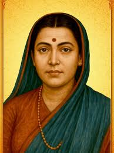

Introduction
Savitribai Phule was a great Indian social reformer, educationist, and poet.
She is known as the first female teacher of India and worked for women’s
education and equality.
Early Life
- Full Name: Savitribai Phule
- Born: 3 January 1831
- Birthplace: Naigaon, Maharashtra, India
- Husband: Jyotirao Phule
Education
- Educated with the support of her husband
- Became one of the first educated women in India
Career
- Started the first school for girls in India in 1848
- Worked as a teacher and social reformer
- Promoted education for women and lower caste communities
Major Achievements
- Pioneer of women’s education in India
- Opened several schools for girls
- Fought against social discrimination and inequality
Challenges
- Faced strong opposition from society for educating girls
- Continued her work despite difficulties
Death
- Died: 10 March 1897
- Passed away while helping plague patients
Conclusion
Savitribai Phule is remembered as a symbol of courage, education,
and social reform in India.
⬅ Back